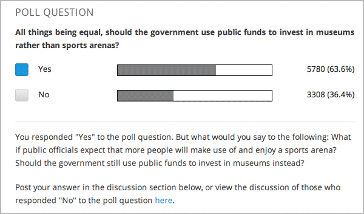

你可以在你的课程中使用投票问题以便你的学生可以在不同的问题上分享观点.
Note
创建一个投票需要你先导出你的课程，在文本编辑器中编辑课程的XML文件的一些内容，然后重新导入你的课程。我们建议你给你的课程创建一个备份在你创建投票的时候。我们也建议你在文本编辑器中仅编辑这个包含投票的XML文件.
章, 节, 单元, 和组件有不同的名字在**课程大纲**视图,你将在文件列表中看到当你导出你的课程并且打开.xml文件编辑它的时候。
| 课程大纲视图 | 文件列表 |
| 章节 | 章 |
| 段 | 连续的 |
| 单元 | 垂直的 |
| 组件 | 讨论, HTML, 问题, 或者视频 |
比如，当你想要发现一个特殊的章节在你的单元里时, 你可以 章 文件夹里查找。 当你打开这个你课程包含的文件列表时.要发现一个单元,你可以在**垂直** 文件夹里查找.
在你想要创建投票的单元里面, 创建包含你需要所有的内容除了投票的组件。记下单元位置下方单元标识符区域出现的32位ID.
导出你的课程. 要更多如何这样做的信息，请查看:ref:导入导出课程. 保存包含你的课程的后缀为.tar.gz文件在在本地以便你很容易可以找到他.
打开包含你课程的.tar.gz文件, 然后解压以便你能看到它包含的文件夹和文件内容。
在文件夹列表中, 打开**Vertical** 文件夹.
Note
如果你的单元没有发布, 打开 Drafts 文件夹, 然后打开**Vertical** 文件夹在 Drafts 文件夹下面.
在 Vertical 文件夹里, 找到 .xml 文件你在步骤1标记的的单元ID，然后用文本编辑器打开这个文件比如Sublime 2. 比如，单元ID是e461de7fe2b84ebeabe1a97683360d31, 你就打开e461de7fe2b84ebeabe1a97683360d31.xml 文件.
这个文件包含这个单元所有的组件列表,和组件的 URL名字. 比如, 下面的文件包含HTML组件随后是讨论组件.
<vertical display_name="Test Unit">
<html url_name="b59c54e2f6fc4cf69ba3a43c49097d0b"/>
<discussion url_name="8320c3d511484f3b96bdedfd4a44ac8b"/>
</vertical>
添加以下的投票代码位于你想要添加投票的地方. 把示例文本改变成你想要的文本.
<poll_question display_name="Poll Question">
<p>Text of the prompt</p>
<answer id="yes">Yes</answer>
<answer id="no">No</answer>
</poll_question>
在上面的示例中, 如果你想要你的投票出现在你课程的HTML组件和讨论组件之间, 你的代码就和以下的类似.
<vertical display_name="Test Unit">
<html url_name="b59c54e2f6fc4cf69ba3a43c49097d0b"/>
<poll_question display_name="Poll Question">
<p>Text of the prompt</p>
<answer id="yes">Yes</answer>
<answer id="no">No</answer>
</poll_question>
<discussion url_name="8320c3d511484f3b96bdedfd4a44ac8b"/>
</vertical>
在你添加投票代码之后，保存并关闭这个.xml文件.
重新把你的课程压缩成一个.tar.gz文件.
在Studio中, 重新到诶你的课程. 你现在课时预览这个投票问题和答案了.
Note
对于投票模板输入的主要标签有:
<poll_question> ... </poll_question>
poll_question 可以包含以下任何的标签:任何xml和任何``answer``标签. 都有的内部xml, 除了``answer``标签, 我们表座”question”.
创建投票功能的Xmodule - 投票制度.下面的属性可以用来指定这个书签:
name - xmodule的名字.
[display_name| AUTOGENERATE] - xmodule的展示名字. 当这个属性没被定义时 - 展示名字自动生成散列.
[reset | False] - 可以 重置/重新投票 多次(value = True/False)
<poll_question name="second_question" display_name="Second question">
<h3>Age</h3>
<p>How old are you?</p>
<answer id="less18">< 18</answer>
<answer id="10_25">from 10 to 25</answer>
<answer id="more25">> 25</answer>
</poll_question>
<poll_question name="first_question_with_reset" display_name="First question with reset"
reset="True">
<h3>Your gender</h3>
<p>You are man or woman?</p>
<answer id="man">Man</answer>
<answer id="woman">Woman</answer>
</poll_question>